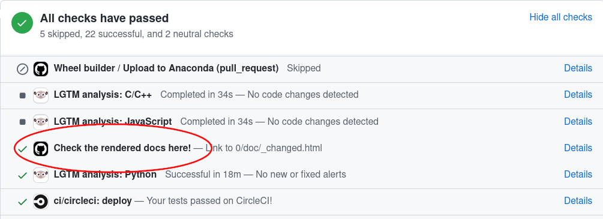

Contributing#
This project is a community effort, and everyone is welcome to contribute. It is hosted on scikit-learn/scikit-learn. The decision making process and governance structure of scikit-learn is laid out in Scikit-learn governance and decision-making.
Scikit-learn is somewhat selective when it comes to adding new algorithms, and the best way to contribute and to help the project is to start working on known issues. See Issues for New Contributors to get started.
In case you experience issues using this package, do not hesitate to submit a ticket to the GitHub issue tracker. You are also welcome to post feature requests or pull requests.
Ways to contribute#
There are many ways to contribute to scikit-learn, with the most common ones being contribution of code or documentation to the project. Improving the documentation is no less important than improving the library itself. If you find a typo in the documentation, or have made improvements, do not hesitate to send an email to the mailing list or preferably submit a GitHub pull request. Full documentation can be found under the doc/ directory.
But there are many other ways to help. In particular helping to improve, triage, and investigate issues and reviewing other developers’ pull requests are very valuable contributions that decrease the burden on the project maintainers.
Another way to contribute is to report issues you’re facing, and give a “thumbs up” on issues that others reported and that are relevant to you. It also helps us if you spread the word: reference the project from your blog and articles, link to it from your website, or simply star to say “I use it”:
In case a contribution/issue involves changes to the API principles or changes to dependencies or supported versions, it must be backed by a Enhancement proposals (SLEPs), where a SLEP must be submitted as a pull-request to enhancement proposals using the SLEP template and follows the decision-making process outlined in Scikit-learn governance and decision-making.
Automated Contributions Policy#
Please refrain from submitting issues or pull requests generated by fully-automated tools. Maintainers reserve the right, at their sole discretion, to close such submissions and to block any account responsible for them.
Ideally, contributions should follow from a human-to-human discussion in the form of an issue.
Submitting a bug report or a feature request#
We use GitHub issues to track all bugs and feature requests; feel free to open an issue if you have found a bug or wish to see a feature implemented.
In case you experience issues using this package, do not hesitate to submit a ticket to the Bug Tracker. You are also welcome to post feature requests or pull requests.
It is recommended to check that your issue complies with the following rules before submitting:
Verify that your issue is not being currently addressed by other issues or pull requests.
If you are submitting an algorithm or feature request, please verify that the algorithm fulfills our new algorithm requirements.
If you are submitting a bug report, we strongly encourage you to follow the guidelines in How to make a good bug report.
How to make a good bug report#
When you submit an issue to GitHub, please do your best to follow these guidelines! This will make it a lot easier to provide you with good feedback:
The ideal bug report contains a short reproducible code snippet, this way anyone can try to reproduce the bug easily. If your snippet is longer than around 50 lines, please link to a Gist or a GitHub repo.
If not feasible to include a reproducible snippet, please be specific about what estimators and/or functions are involved and the shape of the data.
If an exception is raised, please provide the full traceback.
Please include your operating system type and version number, as well as your Python, scikit-learn, numpy, and scipy versions. This information can be found by running:
python -c "import sklearn; sklearn.show_versions()"Please ensure all code snippets and error messages are formatted in appropriate code blocks. See Creating and highlighting code blocks for more details.
If you want to help curate issues, read about Bug triaging and issue curation.
Contributing code#
Note
To avoid duplicating work, it is highly advised that you search through the issue tracker and the PR list. If in doubt about duplicated work, or if you want to work on a non-trivial feature, it’s recommended to first open an issue in the issue tracker to get some feedbacks from core developers.
One easy way to find an issue to work on is by applying the “help wanted”
label in your search. This lists all the issues that have been unclaimed
so far. In order to claim an issue for yourself, please comment exactly
/take on it for the CI to automatically assign the issue to you.
To maintain the quality of the codebase and ease the review process, any contribution must conform to the project’s coding guidelines, in particular:
Don’t modify unrelated lines to keep the PR focused on the scope stated in its description or issue.
Only write inline comments that add value and avoid stating the obvious: explain the “why” rather than the “what”.
Most importantly: Do not contribute code that you don’t understand.
Video resources#
These videos are step-by-step introductions on how to contribute to scikit-learn, and are a great companion to the following text guidelines. Please make sure to still check our guidelines below, since they describe our latest up-to-date workflow.
Crash Course in Contributing to Scikit-Learn & Open Source Projects: Video, Transcript
Example of Submitting a Pull Request to scikit-learn: Video, Transcript
Sprint-specific instructions and practical tips: Video, Transcript
3 Components of Reviewing a Pull Request: Video, Transcript
Note
In January 2021, the default branch name changed from master to main
for the scikit-learn GitHub repository to use more inclusive terms.
These videos were created prior to the renaming of the branch.
For contributors who are viewing these videos to set up their
working environment and submitting a PR, master should be replaced to main.
How to contribute#
The preferred way to contribute to scikit-learn is to fork the main repository on GitHub, then submit a “pull request” (PR).
In the first few steps, we explain how to locally install scikit-learn, and how to set up your git repository:
Create an account on GitHub if you do not already have one.
Fork the project repository: click on the ‘Fork’ button near the top of the page. This creates a copy of the code under your account on the GitHub user account. For more details on how to fork a repository see this guide.
Clone your fork of the scikit-learn repo from your GitHub account to your local disk:
git clone git@github.com:YourLogin/scikit-learn.git # add --depth 1 if your connection is slow cd scikit-learn
Follow steps 2-6 in Building from source to build scikit-learn in development mode and return to this document.
Install the development dependencies:
pip install pytest pytest-cov ruff mypy numpydoc black==24.3.0
Add the
upstreamremote. This saves a reference to the main scikit-learn repository, which you can use to keep your repository synchronized with the latest changes:git remote add upstream git@github.com:scikit-learn/scikit-learn.gitCheck that the
upstreamandoriginremote aliases are configured correctly by runninggit remote -vwhich should display:origin git@github.com:YourLogin/scikit-learn.git (fetch) origin git@github.com:YourLogin/scikit-learn.git (push) upstream git@github.com:scikit-learn/scikit-learn.git (fetch) upstream git@github.com:scikit-learn/scikit-learn.git (push)
You should now have a working installation of scikit-learn, and your git repository properly configured. It could be useful to run some test to verify your installation. Please refer to Useful pytest aliases and flags for examples.
The next steps now describe the process of modifying code and submitting a PR:
Synchronize your
mainbranch with theupstream/mainbranch, more details on GitHub Docs:git checkout main git fetch upstream git merge upstream/main
Create a feature branch to hold your development changes:
git checkout -b my_featureand start making changes. Always use a feature branch. It’s good practice to never work on the
mainbranch!(Optional) Install pre-commit to run code style checks before each commit:
pip install pre-commit pre-commit install
pre-commit checks can be disabled for a particular commit with
git commit -n.Develop the feature on your feature branch on your computer, using Git to do the version control. When you’re done editing, add changed files using
git addand thengit commit:git add modified_files git commit
to record your changes in Git, then push the changes to your GitHub account with:
git push -u origin my_featureFollow these instructions to create a pull request from your fork. This will send an email to the committers. You may want to consider sending an email to the mailing list for more visibility.
It is often helpful to keep your local feature branch synchronized with the latest changes of the main scikit-learn repository:
git fetch upstream
git merge upstream/main
Subsequently, you might need to solve the conflicts. You can refer to the Git documentation related to resolving merge conflict using the command line.
Pull request checklist#
Before a PR can be merged, it needs to be approved by two core developers. An incomplete contribution – where you expect to do more work before receiving a full review – should be marked as a draft pull request and changed to “ready for review” when it matures. Draft PRs may be useful to: indicate you are working on something to avoid duplicated work, request broad review of functionality or API, or seek collaborators. Draft PRs often benefit from the inclusion of a task list in the PR description.
In order to ease the reviewing process, we recommend that your contribution complies with the following rules before marking a PR as “ready for review”. The bolded ones are especially important:
Give your pull request a helpful title that summarizes what your contribution does. This title will often become the commit message once merged so it should summarize your contribution for posterity. In some cases “Fix <ISSUE TITLE>” is enough. “Fix #<ISSUE NUMBER>” is never a good title.
Make sure your code passes the tests. The whole test suite can be run with
pytest, but it is usually not recommended since it takes a long time. It is often enough to only run the test related to your changes: for example, if you changed something insklearn/linear_model/_logistic.py, running the following commands will usually be enough:pytest sklearn/linear_model/_logistic.pyto make sure the doctest examples are correctpytest sklearn/linear_model/tests/test_logistic.pyto run the tests specific to the filepytest sklearn/linear_modelto test the wholelinear_modelmodulepytest doc/modules/linear_model.rstto make sure the user guide examples are correct.pytest sklearn/tests/test_common.py -k LogisticRegressionto run all our estimator checks (specifically forLogisticRegression, if that’s the estimator you changed).
There may be other failing tests, but they will be caught by the CI so you don’t need to run the whole test suite locally. For guidelines on how to use
pytestefficiently, see the Useful pytest aliases and flags.Make sure your code is properly commented and documented, and make sure the documentation renders properly. To build the documentation, please refer to our Documentation guidelines. The CI will also build the docs: please refer to Generated documentation on GitHub Actions.
Tests are necessary for enhancements to be accepted. Bug-fixes or new features should be provided with non-regression tests. These tests verify the correct behavior of the fix or feature. In this manner, further modifications on the code base are granted to be consistent with the desired behavior. In the case of bug fixes, at the time of the PR, the non-regression tests should fail for the code base in the
mainbranch and pass for the PR code.Follow the Coding guidelines.
When applicable, use the validation tools and scripts in the
sklearn.utilsmodule. A list of utility routines available for developers can be found in the Utilities for Developers page.Often pull requests resolve one or more other issues (or pull requests). If merging your pull request means that some other issues/PRs should be closed, you should use keywords to create link to them (e.g.,
Fixes #1234; multiple issues/PRs are allowed as long as each one is preceded by a keyword). Upon merging, those issues/PRs will automatically be closed by GitHub. If your pull request is simply related to some other issues/PRs, or it only partially resolves the target issue, create a link to them without using the keywords (e.g.,Towards #1234).PRs should often substantiate the change, through benchmarks of performance and efficiency (see Monitoring performance) or through examples of usage. Examples also illustrate the features and intricacies of the library to users. Have a look at other examples in the examples/ directory for reference. Examples should demonstrate why the new functionality is useful in practice and, if possible, compare it to other methods available in scikit-learn.
New features have some maintenance overhead. We expect PR authors to take part in the maintenance for the code they submit, at least initially. New features need to be illustrated with narrative documentation in the user guide, with small code snippets. If relevant, please also add references in the literature, with PDF links when possible.
The user guide should also include expected time and space complexity of the algorithm and scalability, e.g. “this algorithm can scale to a large number of samples > 100000, but does not scale in dimensionality:
n_featuresis expected to be lower than 100”.
You can also check our Code Review Guidelines to get an idea of what reviewers will expect.
You can check for common programming errors with the following tools:
Code with a good unit test coverage (at least 80%, better 100%), check with:
pip install pytest pytest-cov pytest --cov sklearn path/to/tests
See also Testing and improving test coverage.
Run static analysis with
mypy:mypy sklearnThis must not produce new errors in your pull request. Using
# type: ignoreannotation can be a workaround for a few cases that are not supported by mypy, in particular,when importing C or Cython modules,
on properties with decorators.
Bonus points for contributions that include a performance analysis with a benchmark script and profiling output (see Monitoring performance). Also check out the How to optimize for speed guide for more details on profiling and Cython optimizations.
Note
The current state of the scikit-learn code base is not compliant with all of those guidelines, but we expect that enforcing those constraints on all new contributions will get the overall code base quality in the right direction.
See also
For two very well documented and more detailed guides on development workflow, please pay a visit to the Scipy Development Workflow - and the Astropy Workflow for Developers sections.
Continuous Integration (CI)#
Azure pipelines are used for testing scikit-learn on Linux, Mac and Windows, with different dependencies and settings.
CircleCI is used to build the docs for viewing.
Github Actions are used for various tasks, including building wheels and source distributions.
Cirrus CI is used to build on ARM.
Please note that if one of the following markers appear in the latest commit message, the following actions are taken.
Commit Message Marker |
Action Taken by CI |
[ci skip] |
CI is skipped completely |
[cd build] |
CD is run (wheels and source distribution are built) |
[cd build gh] |
CD is run only for GitHub Actions |
[cd build cirrus] |
CD is run only for Cirrus CI |
[lint skip] |
Azure pipeline skips linting |
[scipy-dev] |
Build & test with our dependencies (numpy, scipy, etc.) development builds |
[nogil] |
Build & test with the nogil experimental branches of CPython, Cython, NumPy, SciPy, … |
[pypy] |
Build & test with PyPy |
[pyodide] |
Build & test with Pyodide |
[azure parallel] |
Run Azure CI jobs in parallel |
[cirrus arm] |
Run Cirrus CI ARM test |
[float32] |
Run float32 tests by setting |
[doc skip] |
Docs are not built |
[doc quick] |
Docs built, but excludes example gallery plots |
[doc build] |
Docs built including example gallery plots (very long) |
Note that, by default, the documentation is built but only the examples that are directly modified by the pull request are executed.
Stalled pull requests#
As contributing a feature can be a lengthy process, some pull requests appear inactive but unfinished. In such a case, taking them over is a great service for the project. A good etiquette to take over is:
Determine if a PR is stalled
A pull request may have the label “stalled” or “help wanted” if we have already identified it as a candidate for other contributors.
To decide whether an inactive PR is stalled, ask the contributor if she/he plans to continue working on the PR in the near future. Failure to respond within 2 weeks with an activity that moves the PR forward suggests that the PR is stalled and will result in tagging that PR with “help wanted”.
Note that if a PR has received earlier comments on the contribution that have had no reply in a month, it is safe to assume that the PR is stalled and to shorten the wait time to one day.
After a sprint, follow-up for un-merged PRs opened during sprint will be communicated to participants at the sprint, and those PRs will be tagged “sprint”. PRs tagged with “sprint” can be reassigned or declared stalled by sprint leaders.
Taking over a stalled PR: To take over a PR, it is important to comment on the stalled PR that you are taking over and to link from the new PR to the old one. The new PR should be created by pulling from the old one.
Stalled and Unclaimed Issues#
Generally speaking, issues which are up for grabs will have a “help wanted”. tag. However, not all issues which need contributors will have this tag, as the “help wanted” tag is not always up-to-date with the state of the issue. Contributors can find issues which are still up for grabs using the following guidelines:
First, to determine if an issue is claimed:
Check for linked pull requests
Check the conversation to see if anyone has said that they’re working on creating a pull request
If a contributor comments on an issue to say they are working on it, a pull request is expected within 2 weeks (new contributor) or 4 weeks (contributor or core dev), unless an larger time frame is explicitly given. Beyond that time, another contributor can take the issue and make a pull request for it. We encourage contributors to comment directly on the stalled or unclaimed issue to let community members know that they will be working on it.
If the issue is linked to a stalled pull request, we recommend that contributors follow the procedure described in the Stalled pull requests section rather than working directly on the issue.
Issues for New Contributors#
New contributors should look for the following tags when looking for issues. We strongly recommend that new contributors tackle “easy” issues first: this helps the contributor become familiar with the contribution workflow, and for the core devs to become acquainted with the contributor; besides which, we frequently underestimate how easy an issue is to solve!
Good first issue tag
A great way to start contributing to scikit-learn is to pick an item from the list of good first issues in the issue tracker. Resolving these issues allow you to start contributing to the project without much prior knowledge. If you have already contributed to scikit-learn, you should look at Easy issues instead.
Easy tag
If you have already contributed to scikit-learn, another great way to contribute to scikit-learn is to pick an item from the list of Easy issues in the issue tracker. Your assistance in this area will be greatly appreciated by the more experienced developers as it helps free up their time to concentrate on other issues.
Help wanted tag
We often use the help wanted tag to mark issues regardless of difficulty. Additionally, we use the help wanted tag to mark Pull Requests which have been abandoned by their original contributor and are available for someone to pick up where the original contributor left off. The list of issues with the help wanted tag can be found here. Note that not all issues which need contributors will have this tag.
Documentation#
We are glad to accept any sort of documentation:
Function/method/class docstrings: Also known as “API documentation”, these describe what the object does and details any parameters, attributes and methods. Docstrings live alongside the code in sklearn/, and are generated generated according to doc/api_reference.py. To add, update, remove, or deprecate a public API that is listed in API Reference, this is the place to look at.
User guide: These provide more detailed information about the algorithms implemented in scikit-learn and generally live in the root doc/ directory and doc/modules/.
Examples: These provide full code examples that may demonstrate the use of scikit-learn modules, compare different algorithms or discuss their interpretation, etc. Examples live in examples/.
Other reStructuredText documents: These provide various other useful information (e.g., the Contributing guide) and live in doc/.
Guidelines for writing docstrings#
When documenting the parameters and attributes, here is a list of some well-formatted examples
n_clusters : int, default=3 The number of clusters detected by the algorithm. some_param : {"hello", "goodbye"}, bool or int, default=True The parameter description goes here, which can be either a string literal (either `hello` or `goodbye`), a bool, or an int. The default value is True. array_parameter : {array-like, sparse matrix} of shape (n_samples, n_features) \ or (n_samples,) This parameter accepts data in either of the mentioned forms, with one of the mentioned shapes. The default value is `np.ones(shape=(n_samples,))`. list_param : list of int typed_ndarray : ndarray of shape (n_samples,), dtype=np.int32 sample_weight : array-like of shape (n_samples,), default=None multioutput_array : ndarray of shape (n_samples, n_classes) or list of such arraysIn general have the following in mind:
Use Python basic types. (
boolinstead ofboolean)Use parenthesis for defining shapes:
array-like of shape (n_samples,)orarray-like of shape (n_samples, n_features)For strings with multiple options, use brackets:
input: {'log', 'squared', 'multinomial'}1D or 2D data can be a subset of
{array-like, ndarray, sparse matrix, dataframe}. Note thatarray-likecan also be alist, whilendarrayis explicitly only anumpy.ndarray.Specify
dataframewhen “frame-like” features are being used, such as the column names.When specifying the data type of a list, use
ofas a delimiter:list of int. When the parameter supports arrays giving details about the shape and/or data type and a list of such arrays, you can use one ofarray-like of shape (n_samples,) or list of such arrays.When specifying the dtype of an ndarray, use e.g.
dtype=np.int32after defining the shape:ndarray of shape (n_samples,), dtype=np.int32. You can specify multiple dtype as a set:array-like of shape (n_samples,), dtype={np.float64, np.float32}. If one wants to mention arbitrary precision, useintegralandfloatingrather than the Python dtypeintandfloat. When bothintandfloatingare supported, there is no need to specify the dtype.When the default is
None,Noneonly needs to be specified at the end withdefault=None. Be sure to include in the docstring, what it means for the parameter or attribute to beNone.
Add “See Also” in docstrings for related classes/functions.
“See Also” in docstrings should be one line per reference, with a colon and an explanation, for example:
See Also -------- SelectKBest : Select features based on the k highest scores. SelectFpr : Select features based on a false positive rate test.
Add one or two snippets of code in “Example” section to show how it can be used.
Guidelines for writing references#
Guidelines for writing the user guide and other reStructuredText documents#
It is important to keep a good compromise between mathematical and algorithmic details, and give intuition to the reader on what the algorithm does.
Begin with a concise, hand-waving explanation of what the algorithm/code does on the data.
Highlight the usefulness of the feature and its recommended application. Consider including the algorithm’s complexity (\(O\left(g\left(n\right)\right)\)) if available, as “rules of thumb” can be very machine-dependent. Only if those complexities are not available, then rules of thumb may be provided instead.
Incorporate a relevant figure (generated from an example) to provide intuitions.
Include one or two short code examples to demonstrate the feature’s usage.
Introduce any necessary mathematical equations, followed by references. By deferring the mathematical aspects, the documentation becomes more accessible to users primarily interested in understanding the feature’s practical implications rather than its underlying mechanics.
When editing reStructuredText (
.rst) files, try to keep line length under 88 characters when possible (exceptions include links and tables).In scikit-learn reStructuredText files both single and double backticks surrounding text will render as inline literal (often used for code, e.g.,
list). This is due to specific configurations we have set. Single backticks should be used nowadays.Too much information makes it difficult for users to access the content they are interested in. Use dropdowns to factorize it by using the following syntax
Dropdown title#
Dropdown content.
The snippet above will result in the following dropdown:
Dropdown title#
Dropdown content.
Information that can be hidden by default using dropdowns is:
low hierarchy sections such as
References,Properties, etc. (see for instance the subsections in Detection error tradeoff (DET));in-depth mathematical details;
narrative that is use-case specific;
in general, narrative that may only interest users that want to go beyond the pragmatics of a given tool.
Do not use dropdowns for the low level section
Examples, as it should stay visible to all users. Make sure that theExamplessection comes right after the main discussion with the least possible folded section in-between.Be aware that dropdowns break cross-references. If that makes sense, hide the reference along with the text mentioning it. Else, do not use dropdown.
Guidelines for writing references#
When bibliographic references are available with arxiv or Digital Object Identifier identification numbers, use the sphinx directives
:arxiv:or:doi:. For example, see references in Spectral Clustering Graphs.For the “References” section in docstrings, see
sklearn.metrics.silhouette_scoreas an example.To cross-reference to other pages in the scikit-learn documentation use the reStructuredText cross-referencing syntax:
Section: to link to an arbitrary section in the documentation, use reference labels (see Sphinx docs). For example:
.. _my-section: My section ---------- This is the text of the section. To refer to itself use :ref:`my-section`.
You should not modify existing sphinx reference labels as this would break existing cross references and external links pointing to specific sections in the scikit-learn documentation.
Glossary: linking to a term in the Glossary of Common Terms and API Elements:
:term:`cross_validation`
Function: to link to the documentation of a function, use the full import path to the function:
:func:`~sklearn.model_selection.cross_val_score`
However, if there is a
.. currentmodule::directive above you in the document, you will only need to use the path to the function succeeding the current module specified. For example:.. currentmodule:: sklearn.model_selection :func:`cross_val_score`
Class: to link to documentation of a class, use the full import path to the class, unless there is a
.. currentmodule::directive in the document above (see above)::class:`~sklearn.preprocessing.StandardScaler`
You can edit the documentation using any text editor, and then generate the
HTML output by following Building the documentation. The resulting HTML files
will be placed in _build/html/ and are viewable in a web browser, for instance by
opening the local _build/html/index.html file or by running a local server
python -m http.server -d _build/html
Building the documentation#
Before submitting a pull request check if your modifications have introduced new sphinx warnings by building the documentation locally and try to fix them.
First, make sure you have properly installed the development version. On top of that, building the documentation requires installing some additional packages:
pip install sphinx sphinx-gallery numpydoc matplotlib Pillow pandas \
polars scikit-image packaging seaborn sphinx-prompt \
sphinxext-opengraph sphinx-copybutton plotly pooch \
pydata-sphinx-theme sphinxcontrib-sass sphinx-design \
sphinx-remove-toctrees
To build the documentation, you need to be in the doc folder:
cd doc
In the vast majority of cases, you only need to generate the web site without the example gallery:
make
The documentation will be generated in the _build/html/stable directory
and are viewable in a web browser, for instance by opening the local
_build/html/stable/index.html file.
To also generate the example gallery you can use:
make html
This will run all the examples, which takes a while. You can also run only a few examples based on their file names.
Here is a way to run all examples with filenames containing plot_calibration:
EXAMPLES_PATTERN="plot_calibration" make html
You can use regular expressions for more advanced use cases.
Set the environment variable NO_MATHJAX=1 if you intend to view the documentation in
an offline setting. To build the PDF manual, run:
make latexpdf
Sphinx version
While we do our best to have the documentation build under as many versions of Sphinx as possible, the different versions tend to behave slightly differently. To get the best results, you should use the same version as the one we used on CircleCI. Look at this GitHub search to know the exact version.
Generated documentation on GitHub Actions#
When you change the documentation in a pull request, GitHub Actions automatically builds it. To view the documentation generated by GitHub Actions, simply go to the bottom of your PR page, look for the item “Check the rendered docs here!” and click on ‘details’ next to it:
Testing and improving test coverage#
High-quality unit testing
is a corner-stone of the scikit-learn development process. For this
purpose, we use the pytest
package. The tests are functions appropriately named, located in tests
subdirectories, that check the validity of the algorithms and the
different options of the code.
Running pytest in a folder will run all the tests of the corresponding
subpackages. For a more detailed pytest workflow, please refer to the
Pull request checklist.
We expect code coverage of new features to be at least around 90%.
Workflow to improve test coverage#
To test code coverage, you need to install the coverage package in addition to pytest.
Run
make test-coverage. The output lists for each file the line numbers that are not tested.Find a low hanging fruit, looking at which lines are not tested, write or adapt a test specifically for these lines.
Loop.
Monitoring performance#
This section is heavily inspired from the pandas documentation.
When proposing changes to the existing code base, it’s important to make sure
that they don’t introduce performance regressions. Scikit-learn uses
asv benchmarks to monitor the
performance of a selection of common estimators and functions. You can view
these benchmarks on the scikit-learn benchmark page.
The corresponding benchmark suite can be found in the asv_benchmarks/ directory.
To use all features of asv, you will need either conda or virtualenv. For
more details please check the asv installation webpage.
First of all you need to install the development version of asv:
pip install git+https://github.com/airspeed-velocity/asv
and change your directory to asv_benchmarks/:
cd asv_benchmarks
The benchmark suite is configured to run against your local clone of scikit-learn. Make sure it is up to date:
git fetch upstream
In the benchmark suite, the benchmarks are organized following the same
structure as scikit-learn. For example, you can compare the performance of a
specific estimator between upstream/main and the branch you are working on:
asv continuous -b LogisticRegression upstream/main HEAD
The command uses conda by default for creating the benchmark environments. If
you want to use virtualenv instead, use the -E flag:
asv continuous -E virtualenv -b LogisticRegression upstream/main HEAD
You can also specify a whole module to benchmark:
asv continuous -b linear_model upstream/main HEAD
You can replace HEAD by any local branch. By default it will only report the
benchmarks that have change by at least 10%. You can control this ratio with
the -f flag.
To run the full benchmark suite, simply remove the -b flag :
asv continuous upstream/main HEAD
However this can take up to two hours. The -b flag also accepts a regular
expression for a more complex subset of benchmarks to run.
To run the benchmarks without comparing to another branch, use the run
command:
asv run -b linear_model HEAD^!
You can also run the benchmark suite using the version of scikit-learn already installed in your current Python environment:
asv run --python=same
It’s particularly useful when you installed scikit-learn in editable mode to avoid creating a new environment each time you run the benchmarks. By default the results are not saved when using an existing installation. To save the results you must specify a commit hash:
asv run --python=same --set-commit-hash=<commit hash>
Benchmarks are saved and organized by machine, environment and commit. To see the list of all saved benchmarks:
asv show
and to see the report of a specific run:
asv show <commit hash>
When running benchmarks for a pull request you’re working on please report the results on github.
The benchmark suite supports additional configurable options which can be set
in the benchmarks/config.json configuration file. For example, the benchmarks
can run for a provided list of values for the n_jobs parameter.
More information on how to write a benchmark and how to use asv can be found in the asv documentation.
Maintaining backwards compatibility#
Deprecation#
If any publicly accessible class, function, method, attribute or parameter is renamed, we still support the old one for two releases and issue a deprecation warning when it is called, passed, or accessed.
Deprecating a class or a function
Suppose the function zero_one is renamed to zero_one_loss, we add the decorator
utils.deprecated to zero_one and call zero_one_loss from that
function:
from ..utils import deprecated
def zero_one_loss(y_true, y_pred, normalize=True):
# actual implementation
pass
@deprecated(
"Function `zero_one` was renamed to `zero_one_loss` in 0.13 and will be "
"removed in 0.15. Default behavior is changed from `normalize=False` to "
"`normalize=True`"
)
def zero_one(y_true, y_pred, normalize=False):
return zero_one_loss(y_true, y_pred, normalize)
One also needs to move zero_one from API_REFERENCE to
DEPRECATED_API_REFERENCE and add zero_one_loss to API_REFERENCE in the
doc/api_reference.py file to reflect the changes in API Reference.
Deprecating an attribute or a method
If an attribute or a method is to be deprecated, use the decorator
deprecated on the property. Please note that the
deprecated decorator should be placed before the property decorator
if there is one, so that the docstrings can be rendered properly. For instance, renaming
an attribute labels_ to classes_ can be done as:
@deprecated(
"Attribute `labels_` was deprecated in 0.13 and will be removed in 0.15. Use "
"`classes_` instead"
)
@property
def labels_(self):
return self.classes_
Deprecating a parameter
If a parameter has to be deprecated, a FutureWarning warning must be raised
manually. In the following example, k is deprecated and renamed to n_clusters:
import warnings
def example_function(n_clusters=8, k="deprecated"):
if k != "deprecated":
warnings.warn(
"`k` was renamed to `n_clusters` in 0.13 and will be removed in 0.15",
FutureWarning,
)
n_clusters = k
When the change is in a class, we validate and raise warning in fit:
import warnings
class ExampleEstimator(BaseEstimator):
def __init__(self, n_clusters=8, k='deprecated'):
self.n_clusters = n_clusters
self.k = k
def fit(self, X, y):
if self.k != "deprecated":
warnings.warn(
"`k` was renamed to `n_clusters` in 0.13 and will be removed in 0.15.",
FutureWarning,
)
self._n_clusters = self.k
else:
self._n_clusters = self.n_clusters
As in these examples, the warning message should always give both the version in which the deprecation happened and the version in which the old behavior will be removed. If the deprecation happened in version 0.x-dev, the message should say deprecation occurred in version 0.x and the removal will be in 0.(x+2), so that users will have enough time to adapt their code to the new behaviour. For example, if the deprecation happened in version 0.18-dev, the message should say it happened in version 0.18 and the old behavior will be removed in version 0.20.
The warning message should also include a brief explanation of the change and point users to an alternative.
In addition, a deprecation note should be added in the docstring, recalling the
same information as the deprecation warning as explained above. Use the
.. deprecated:: directive:
.. deprecated:: 0.13
``k`` was renamed to ``n_clusters`` in version 0.13 and will be removed
in 0.15.
What’s more, a deprecation requires a test which ensures that the warning is
raised in relevant cases but not in other cases. The warning should be caught
in all other tests (using e.g., @pytest.mark.filterwarnings),
and there should be no warning in the examples.
Change the default value of a parameter#
If the default value of a parameter needs to be changed, please replace the
default value with a specific value (e.g., "warn") and raise
FutureWarning when users are using the default value. The following
example assumes that the current version is 0.20 and that we change the
default value of n_clusters from 5 (old default for 0.20) to 10
(new default for 0.22):
import warnings
def example_function(n_clusters="warn"):
if n_clusters == "warn":
warnings.warn(
"The default value of `n_clusters` will change from 5 to 10 in 0.22.",
FutureWarning,
)
n_clusters = 5
When the change is in a class, we validate and raise warning in fit:
import warnings
class ExampleEstimator:
def __init__(self, n_clusters="warn"):
self.n_clusters = n_clusters
def fit(self, X, y):
if self.n_clusters == "warn":
warnings.warn(
"The default value of `n_clusters` will change from 5 to 10 in 0.22.",
FutureWarning,
)
self._n_clusters = 5
Similar to deprecations, the warning message should always give both the version in which the change happened and the version in which the old behavior will be removed.
The parameter description in the docstring needs to be updated accordingly by adding
a versionchanged directive with the old and new default value, pointing to the
version when the change will be effective:
.. versionchanged:: 0.22
The default value for `n_clusters` will change from 5 to 10 in version 0.22.
Finally, we need a test which ensures that the warning is raised in relevant cases but
not in other cases. The warning should be caught in all other tests
(using e.g., @pytest.mark.filterwarnings), and there should be no warning
in the examples.
Code Review Guidelines#
Reviewing code contributed to the project as PRs is a crucial component of scikit-learn development. We encourage anyone to start reviewing code of other developers. The code review process is often highly educational for everybody involved. This is particularly appropriate if it is a feature you would like to use, and so can respond critically about whether the PR meets your needs. While each pull request needs to be signed off by two core developers, you can speed up this process by providing your feedback.
Note
The difference between an objective improvement and a subjective nit isn’t always clear. Reviewers should recall that code review is primarily about reducing risk in the project. When reviewing code, one should aim at preventing situations which may require a bug fix, a deprecation, or a retraction. Regarding docs: typos, grammar issues and disambiguations are better addressed immediately.
Important aspects to be covered in any code review#
Here are a few important aspects that need to be covered in any code review, from high-level questions to a more detailed check-list.
Do we want this in the library? Is it likely to be used? Do you, as a scikit-learn user, like the change and intend to use it? Is it in the scope of scikit-learn? Will the cost of maintaining a new feature be worth its benefits?
Is the code consistent with the API of scikit-learn? Are public functions/classes/parameters well named and intuitively designed?
Are all public functions/classes and their parameters, return types, and stored attributes named according to scikit-learn conventions and documented clearly?
Is any new functionality described in the user-guide and illustrated with examples?
Is every public function/class tested? Are a reasonable set of parameters, their values, value types, and combinations tested? Do the tests validate that the code is correct, i.e. doing what the documentation says it does? If the change is a bug-fix, is a non-regression test included? Look at this to get started with testing in Python.
Do the tests pass in the continuous integration build? If appropriate, help the contributor understand why tests failed.
Do the tests cover every line of code (see the coverage report in the build log)? If not, are the lines missing coverage good exceptions?
Is the code easy to read and low on redundancy? Should variable names be improved for clarity or consistency? Should comments be added? Should comments be removed as unhelpful or extraneous?
Could the code easily be rewritten to run much more efficiently for relevant settings?
Is the code backwards compatible with previous versions? (or is a deprecation cycle necessary?)
Will the new code add any dependencies on other libraries? (this is unlikely to be accepted)
Does the documentation render properly (see the Documentation section for more details), and are the plots instructive?
Standard replies for reviewing includes some frequent comments that reviewers may make.
Communication Guidelines#
Reviewing open pull requests (PRs) helps move the project forward. It is a great way to get familiar with the codebase and should motivate the contributor to keep involved in the project. [1]
Every PR, good or bad, is an act of generosity. Opening with a positive comment will help the author feel rewarded, and your subsequent remarks may be heard more clearly. You may feel good also.
Begin if possible with the large issues, so the author knows they’ve been understood. Resist the temptation to immediately go line by line, or to open with small pervasive issues.
Do not let perfect be the enemy of the good. If you find yourself making many small suggestions that don’t fall into the Code Review Guidelines, consider the following approaches:
refrain from submitting these;
prefix them as “Nit” so that the contributor knows it’s OK not to address;
follow up in a subsequent PR, out of courtesy, you may want to let the original contributor know.
Do not rush, take the time to make your comments clear and justify your suggestions.
You are the face of the project. Bad days occur to everyone, in that occasion you deserve a break: try to take your time and stay offline.
Reading the existing code base#
Reading and digesting an existing code base is always a difficult exercise that takes time and experience to master. Even though we try to write simple code in general, understanding the code can seem overwhelming at first, given the sheer size of the project. Here is a list of tips that may help make this task easier and faster (in no particular order).
Get acquainted with the APIs of scikit-learn objects: understand what fit, predict, transform, etc. are used for.
Before diving into reading the code of a function / class, go through the docstrings first and try to get an idea of what each parameter / attribute is doing. It may also help to stop a minute and think how would I do this myself if I had to?
The trickiest thing is often to identify which portions of the code are relevant, and which are not. In scikit-learn a lot of input checking is performed, especially at the beginning of the fit methods. Sometimes, only a very small portion of the code is doing the actual job. For example looking at the
fitmethod ofLinearRegression, what you’re looking for might just be the call thescipy.linalg.lstsq, but it is buried into multiple lines of input checking and the handling of different kinds of parameters.Due to the use of Inheritance, some methods may be implemented in parent classes. All estimators inherit at least from
BaseEstimator, and from aMixinclass (e.g.ClassifierMixin) that enables default behaviour depending on the nature of the estimator (classifier, regressor, transformer, etc.).Sometimes, reading the tests for a given function will give you an idea of what its intended purpose is. You can use
git grep(see below) to find all the tests written for a function. Most tests for a specific function/class are placed under thetests/folder of the moduleYou’ll often see code looking like this:
out = Parallel(...)(delayed(some_function)(param) for param in some_iterable). This runssome_functionin parallel using Joblib.outis then an iterable containing the values returned bysome_functionfor each call.We use Cython to write fast code. Cython code is located in
.pyxand.pxdfiles. Cython code has a more C-like flavor: we use pointers, perform manual memory allocation, etc. Having some minimal experience in C / C++ is pretty much mandatory here. For more information see Cython Best Practices, Conventions and Knowledge.Master your tools.
With such a big project, being efficient with your favorite editor or IDE goes a long way towards digesting the code base. Being able to quickly jump (or peek) to a function/class/attribute definition helps a lot. So does being able to quickly see where a given name is used in a file.
Git also has some built-in killer features. It is often useful to understand how a file changed over time, using e.g.
git blame(manual). This can also be done directly on GitHub.git grep(examples) is also extremely useful to see every occurrence of a pattern (e.g. a function call or a variable) in the code base.
Configure
git blameto ignore the commit that migrated the code style toblack.git config blame.ignoreRevsFile .git-blame-ignore-revsFind out more information in black’s documentation for avoiding ruining git blame.